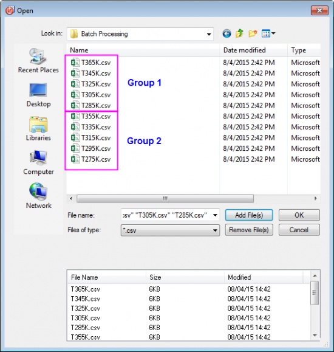
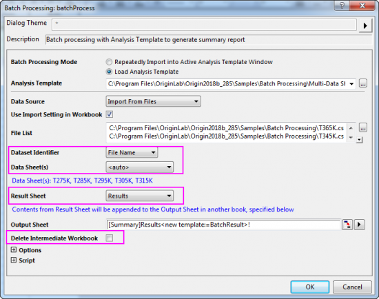
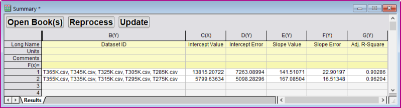

Stapelverarbeitung von gruppierten Datensätzen mit Hilfe einer von Analysevorlagen für Blätter mit mehreren Datensätzen
BatchProcess-GroupData
Zusammenfassung
Origin kann eine Stapelanalyse auf gruppierte Datensätze mit Hilfe einer Analysevorlage für mehrere Datensätze durchführen.
Origin-Version mind. erforderlich: 2016 SR0
 |
Auch wenn die Methode nicht so flexibel oder leistungsstark wie die Stapelverarbeitung ist, können Sie Import- und Analyseoperationen in der aktiven Arbeitsmappe "klonen". Dazu verwenden Sie die Vorgehensweise, die in diesem Tutorial beschrieben wird.
|
Was Sie lernen werden
Dieses Tutorial zeigt Ihnen, wie Sie:
- Analysevorlage für Blätter mit mehreren Datensätzen erstellen
- Stapelanalyse auf gruppierte Datensätze mit Hilfe einer Analysevorlage durchführen
Funktionsweise einer Analysevorlage
Die als Referenz verwendete Analysevorlage für mehrere Datensätze Multi-Data Sheets Analysis.ogw, die Sie erstellen werden, befindet sich im Ordner <Origin-Ordner>\Samples\Batch Processing. Diese Analysevorlage verarbeitet 10 CSV-Dateien, die sich in dem Ordner <Origin-Ordner>\Samples\Batch Processing in Gruppen von 5 befinden. Alle 5 Datendateien werden in aufeinander folgende Datenblätter in der Analysevorlage importiert und ein nicht-linearer Fit wird durchgeführt, um die Peakfläche und ihren Standardfehler von jeder Kurve zu ermitteln. Am Ende führen Sie eine lineare Anpassung auf die Peakfläche vs. die Temperaturdaten, die aus dem Dateinamen extrahiert wurden, durch und geben die Ergebnisse aus.
Schritte
Analysevorlage für Blätter mit mehreren Datensätzen erstellen
CSV-Dateien in aufeinander folgende Datenblätter importieren
- Öffnen Sie eine neue Arbeitsmappe. Klicken Sie im Menü auf Daten: Mehrere Dateien verbinden, um den Dialog files2dc zu öffnen.
- Setzen Sie die Auswahlliste Datenkonnektor auf CSV, navigieren Sie dann zum Ordner <Origin-Verzeichnis>\Samples\Batch Processing und wählen Sie die ersten fünf Datendateien aus.
- Aktivieren Sie das Kontrollkästchen Gleiche Mappe und klicken Sie auf OK.
Peakfläche mit Hilfe eines nichtlinearen Fits ermitteln
- Markieren Sie Spalte 2 in Blatt T275k, halten Sie Strg + Y gedrückt oder gehen Sie im Menü zu Analyse: Anpassen: Nichtlinearer Fit, um den Dialog NLFit zu öffnen.
- Setzen Sie Neu berechnen auf Auto.
- Wählen Sie Gauss unter Funktion in der Kategorie Origin Basic Functions.
- Klicken Sie auf die Schaltfläche Fit, um die Anpassung durchzuführen. Klicken Sie auf OK in der Befehlsaufforderung, um sie zu schließen.
- Wiederholen Sie die Schritte 4 bis 7 für die Datensätze T285k, T295K, T305K und T315K, um Peakflächen für alle fünf Peaks zu ermitteln.
Daten für linearen Fit vorbereiten
- Klicken Sie mit der rechten Maustaste auf den Reiter FitNLCurve5 und wählen Sie Hinzufügen, um ein Arbeitsblatt hinzuzufügen. Klicken Sie doppelt auf den Namen und geben Sie TempData als Blattname ein.
- Halten Sie Strg+D gedrückt, um den Dialog Neue Spalten hinzufügen und geben Sie 2 in das Bearbeitungsfeld ein, um 2 zusätzliche Spalten hinzuzufügen. Klicken Sie auf OK, um den Dialog zu schließen.
- Legen Sie den Langnamen der 4 Spalten mit Datendatei, Temperatur, Flächenwert bzw. Flächenfehler fest.
- Klicken Sie mit der rechten Maustaste auf die erste Datenzelle in der Spalte Datendatei und wählen Sie Variable einfügen, um den Dialog zu öffnen. Klicken Sie im rechten Bedienfeld auf den Knoten Mappe und aktivieren Sie Blattebene zeigen, um die Blätter in der Mappe zu zeigen. Klicken Sie dann auf das Blatt T275K im rechten Bedienfeld und klicken Sie auf die Registerkarte Beschriftung im linken Bedienfeld. Klicken Sie auf die Eigenschaft Name, um diese Zeile zu markieren, und klicken Sie auf die Schaltfläche Einfügen, um den Blattnamen in diese Zelle einzufügen.
- Wiederholen Sie diesen Schritt für die anderen vier Blätter, um den Blattnamen zu der Spalte Datendatei hinzuzufügen.
- Als Nächstes soll die Temperaturangabe aus dem Blattnamen in die erste Spalte extrahiert werden. Dazu markieren Sie die Spalte Temperatur und klicken Sie mit der rechten Maustaste, um Werte setzen auszuwählen. Geben Sie die Formel unten in das Bearbeitungsfeld ein, um die mittleren 3 Zahlen aus dem Dateiname zu extrahieren, und klicken Sie auf OK, um den Dialog zu schließen und die Einstellung anzuwenden.
Value(mid(col(A),2,3)$)
- Gehen Sie zu Blatt FitNL1 und markieren Sie die zwei Wertezellen unter der Variablen A im Zweig Zusammenfassung. Klicken Sie mit rechten Maustaste und wählen Sie Kopieren, um die Daten zu kopieren. Gehen Sie dann zu Blatt TempData und fügen und verknüpfen Sie die Daten in der ersten Zeile in Spalte Flächenwert und Flächenfehler. Wiederholen Sie diesen Schritt für die anderen vier Datendateien.
- Legen Sie die Zuordnung der Spalte Temperatur mit X und die der Spalte Flächenfehler mit Y-Fehler fest.
Linearen Fit durchführen und Ergebnisblatt erstellen
- Markieren Sie die Spalten Flächenwert und Flächenfehler und gehen Sie im Menü zu Analyse: Anpassen: Linearer Fit, um den Dialog zu öffnen. Wählen Sie für den Modus Neu berechnen die Option Auto und klicken Sie auf OK, um die lineare Anpassung durchzuführen und den Dialog zu schließen. Klicken Sie auf OK in der Befehlsaufforderung, um sie zu schließen.
- Klicken Sie mit der rechten Maustaste auf den Reiter FitLinearCurve1 und wählen Sie Hinzufügen, um ein neues Blatt hinzuzufügen und es Ergebnisse zu nennen.
- Halten Sie Strg+D gedrückt, um den Dialog Neue Spalten hinzufügen und geben Sie 3 in das Bearbeitungsfeld ein, um 3 neue Spalten hinzuzufügen.
- Legen Sie den Langnamen der 5 Spalten mit Wert des Schnittpunkts mit Y-Achse, Fehler des Schnittpunkts mit Y-Achse, Wert der Steigung, Fehler der Steigung bzw. Korr. R-Quadrat fest.
- Gehen Sie zu Blatt FitLinear1, kopieren Sie 5 Wertezellen im Zweig Zusammenfassung und gehen Sie zurück zum Blatt Ergebnisse. Klicken Sie auf die erste Zelle in der ersten Datenzeile, um sie als Link einzufügen.
- Wählen Sie im Menü Datei: Arbeitsmappe als Analysevorlage speichern..., um es als Analysevorlage zu speichern und nennen Sie diese Analyse von Blättern mit mehreren Datensätzen.
Stapelanalyse von Dateien in Gruppen
Unter <Origin-Ordner\Samples\Batch Processing gibt es 10 CSV-Datendateien. Angenommen, Sie möchten die Dateien in zwei Gruppen gruppieren und sie folgendermaßen neu ordnen: Gruppe 1 mit T365K, T345K, T325K, T305K, T285K; Gruppe 2 mit T355K, T335K, T315K, T295K, T275K. Nun werden diese beiden gruppierten Dateien mit Hilfe der Analysevorlage verarbeitet, die oben erstellt wurde.
- Wählen Sie im Menü Datei: Stapelverarbeitung, um den Dialog zu öffnen, und klicken Sie auf die Schaltfläche zum Suchen weiterer Optionen neben dem Bearbeitungsfeld Analysevorlage, um zur Analysevorlage Multi-Data Sheets Analysis.ogw zu navigieren.
- Klicken Sie auf die Schaltfläche neben dem Bearbeitungsfeld Dateiliste, um den Dialog Öffnen aufzurufen. Ziehen die CSV-Dateien zuerst eine nach der anderen, um sie dem Bild unten entsprechend neu zu ordnen, und klicken Sie auf die Schaltfläche Hinzufügen), um Dateien zu der Liste hinzufügen. Klicken Sie auf OK, um den Dialog zu verlassen.

- Wählen Sie Dateiname als Datensatzidentifikator, das Blatt Results als Ergebnisblatt und deaktivieren Sie das Kontrollkästchen Zwischenmappen löschen.

- Klicken Sie auf OK, um die Verarbeitung zu starten. Und klicken Sie auf OK, um die Einstellungen des Dialogs Stapelverarbeitung in der verwendeten Analysevorlage zu speichern (erst verfügbar ab Origin 2018b). Die Ergebnisse werden in die Arbeitsmappe Zusammenfassung ausgegeben, wie unten gezeigt:

|
Beachten Sie die drei Schaltflächen, die oben im Ausgabeblatt (Mappe Summary, Blatt Results) hinzugefügt wurden:
- Mappe(n) öffnen: Wenn Sie Zwischenmappen löschen aktivieren (siehe Schritt 3 oben) und später entscheiden, dass Sie sie doch brauchen, können Sie die entsprechenden Zeilen im Blatt Results markieren und auf diese Schaltfläche klicken, um die gelöschten Mappen erneut zu erzeugen.
- Erneut verarbeiten: Klicken Sie auf diese Schaltfläche, um den Import erneut auszuführen und die Ergebnisse zu aktualisieren, wenn Änderungen an den externen Datendateien vorgenommen wurden.
- Aktualisieren: Klicken Sie auf diese Schaltfläche, um Ergebnisse zu aktualisieren, wenn sich etwas auf der Eingabeseite Ihrer Analyse geändert hat (z. B. Maskieren der Daten in Ihren Datenblättern).
|